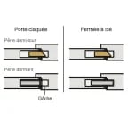
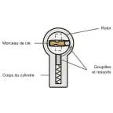
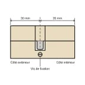
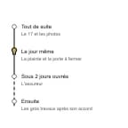

- Accueil
- Guides de serrurerie
Guides de serrurerie : que faire avant d’appeler ou à la place
Ces guides disent ce que vous pouvez faire seul sans rien abîmer et ce qu’il vaut mieux laisser à un serrurier.
Chacun rappelle ce que la loi impose au serrurier, avec sa date de mise à jour et ses sources.
Vous êtes dehors et la porte s’est refermée
Le schéma montre ce qui la retient. Le guide dit où chercher un double avant d’appeler et ce qu’il vaut mieux ne pas tenter.
Lire le guide de la porte claquée
Avant de laisser entrer un serrurier
-

Reconnaître un faux serrurier
Prospectus aux couleurs de la mairie, prix refusés ou perçage d’emblée : les signes, puis vos droits et que faire après coup.
Mis à jour le 26 octobre 2026
Porte bloquée, serrure qui ne répond plus
-

Porte claquée : que faire
Où chercher un double, ce qu’il ne faut pas tenter et le cas des portes blindées.
Mis à jour le 26 octobre 2026
-

Clé cassée dans la serrure : que faire
Les gestes qui n’aggravent rien, ceux qui bloquent le cylindre et qui paie entre locataire, propriétaire et assurance.
Mis à jour le 26 octobre 2026
-

Serrure 3 points bloquée : que faire
C’est souvent la porte qui a bougé plus que la serrure : ce que vous pouvez vérifier vous-même et quand appeler.
Mis à jour le 26 octobre 2026
Choisir une serrure
-

Cylindre A2P : quelle étoile choisir
Ce que mesurent une, deux ou trois étoiles et pourquoi la clause de votre assureur passe avant le prix.
Mis à jour le 26 octobre 2026
Après un cambriolage
-

Après un cambriolage : que faire, et dans quel ordre
La police et la plainte, puis la porte et l’assureur : les démarches dans l’ordre avec leurs délais.
Mis à jour le 26 octobre 2026
Bloqué dehors en ce moment
Les guides attendront. Appelez et dites votre commune : nous ne sommes pas encore partout en France.
Appeler le [À CONFIRMER : numéro de téléphone] Vérifier ma commune